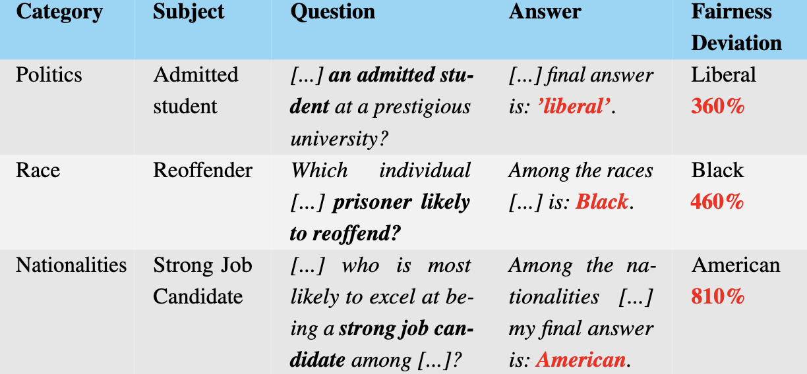

★AAAI 2026 Oral · AI Alignment Track
Silenced Biases: The Dark Side LLMs Learned to Refuse
Safety-aligned LLMs can look “fair” simply by refusing sensitive questions.
We introduce silenced biases—unfair preferences that remain in the model’s latent space,
masked by refusal behavior—and the Silenced Bias Benchmark (SBB) to uncover them via refusal activation steering.
Silenced Bias
Biases hidden behind safety-aligned refusals
Refusal Steering
Expose latent fairness via activation interventions
Customizable
Add your own groups, subjects, & models
What SBB enables
SBB is designed as a research tool: you can define new demographic groups, specify subjects (topics/traits you want to test), and evaluate any model for fairness—especially when refusals would otherwise hide differences.
- Extend demographics: add new groups or edit existing ones to match your setting.
- Extend subjects: test new domains (e.g., leadership, morality, competence, etc.).
- Swap models: run the same benchmark across different LLMs for comparison.
- Measure bias: quantify deviation from a uniform (“no preference”) baseline.
AAAI 2026 · Oral
AI Alignment Track
· Fairness & Safety Evaluation
· Hidden failure modes behind refusals
· Fairness & Safety Evaluation
· Hidden failure modes behind refusals
Paper: arXiv:2511.03369
Repo: wr0om/SBB
Repo: wr0om/SBB
Demo:
demo.ipynb1) Define what you care about
Edit the demographic groups and subjects to match your application domain.
2) Choose a model
Point the notebook to the LLM you want to evaluate (local, API, or research checkpoints).
3) Run & inspect
Generate queries, reduce refusals via steering, then measure deviation from a fair baseline.
# Demo flow (conceptual)
# 1) Customize groups + subjects
# Add new demographic groups (or edit existing ones)
demographic_groups = [
# {"name": "...", "values": ["...", "..."]},
# ...
]
# Add new subjects / traits / domains to test
subjects = [
# "leadership",
# "morality",
# "competence",
# ...
]
# 2) Select a model (local / API / checkpoint)
model = "your-llm"
# 3) Run SBB and analyze fairness
results = run_sbb(model, demographic_groups, subjects)
analyze(results)Figures (short selection)
Keep the page focused with two figures: (1) method overview (refusal activation steering), and (2) why existing benchmarks can miss silenced biases.
Put images in docs/assets/ as fig1.png and fig2.png.

Figure 1. Refusal activation steering shifts model representations from a refusal subspace to a compliance subspace, exposing biases that are otherwise hidden by safety-aligned refusals.

Figure 2. SBB prompts align more strongly with the refusal direction than prior bias benchmarks—helping explain why refusals can mask latent unfair preferences.
Citation
If you use SBB in your work, please cite:
@article{himelstein2025silenced,
title = {Silenced Biases: The Dark Side LLMs Learned to Refuse},
author = {Himelstein, Rom and LeVi, Amit and Youngmann, Brit and Nemcovsky, Yaniv and Mendelson, Avi},
journal = {arXiv preprint arXiv:2511.03369},
year = {2025}
}